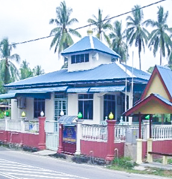

OUR HERITAGE
Here are some of our heritages.1) Makam Almarhum Sultan Ali Ibni Almarhum Sultan Husin.
The Sultan of Johor has signed an agreement 'Batu Putih' during British Goverment in Malaysia. He was the son of Almarhum Sultan Husin, the ruler of Singapore which has been buried at the oldest Mosque in Malacca state, Masjid Tengkera.Address: Masjid Tengkera, Jalan Tengkera, 75200 Malacca
Google Maps:
2) Masjid Al Kauthar
Masjid Jamek Umbai, is one of the oldest mosque here in DUN Serkam. The mosque was actually was declared as the oldest mosque but after some experiences and studies that have been done, the oldest Mosque Serkam was at Serkam Darat but it was no longer exist. End up another mosque was build at Serkam Pantai. To conclude, the old mosque which still exist here is Masjid Jamek Umbai which is know named as Masjid Al - Kauthar. Plus, this mosque is now placed under the supervision of Perbadanan Muzium Melaka.Address: Masjid Al kauthar, Umbai KM 14, UMBAI, 77300, MERLIMAU, MALAYSIA
Google Maps:
3) Surau Al-Kahfi
 Surau Al Kahfi has been renovated a few times and now it was build and become a brand new 'surau'. The previous space to do prayer was small rather than now.Address: Surau Al Kahfi, 77300 Merlimau, Malacca
Google Maps:
4) Surau Ahmadi
This 'surau' is located near to the Pekan Umbai. The building is beside the Kindergarten KEMAS and Umbai Polyclinic which is beside the main road.Address: Kampung Bukit Tembakau, 77300 Ayer Molek, Malacca
Google Maps:
5) Jeti Nelayan Umbai
Address: Balai Nelayan Umbai Pantai, 75460, 75460, MalaccaGoogle Maps:
Welcome!

Welcome to the latest official Website of Kampung Umbai! Do enjoy your visit here and make sure to follow and join us on social media !
Official email address:
kampungumbaikami@gmail.com
Search
(Example: about)Find Us
Date
Latest News
Kampongku Umbai
The official theme song of Kampung Umbai
Kisah impian Kampung ku Umbai
Megah harmoni aman dan damai
Berganding bahu bantu membantu
Teguh hati sepakat berpadu
Desa bistari kampung ku Umbai
Lahir pemimpin bijak dan pandai
Setia berkhidmat pacu pembangunan
Terus maju langkah berwawasan
Desa bertuah kampung ku Umbai
Cantik bersih indah sekali
Ada ternakan dan juga perusahaan
Tingkat ekonomi jana pendapatan
Reff
Kampung ku Umbai desa gemilang
Sudah terkenal nama dijulang
Berdaya maju bersinar cemerlang
Tegoh berpadu desa terbilang.....
Desa ku indah Kampung ku Umbai
Menggamit pelancong datang beramai
Hasil lautan menjadi pilihan
Ikan bakar juadah menyelera
Desa bersejarah kampung ku Umbai
Berbudaya dan menjaga warisan
Hormat menghormati menjadi amalan
Bersyukur dengan anugerah tuhan